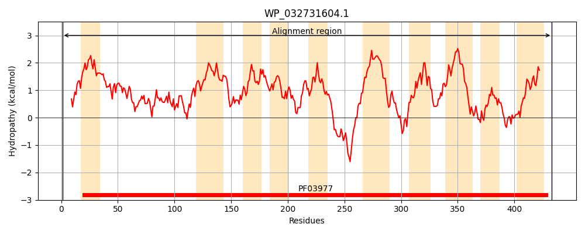
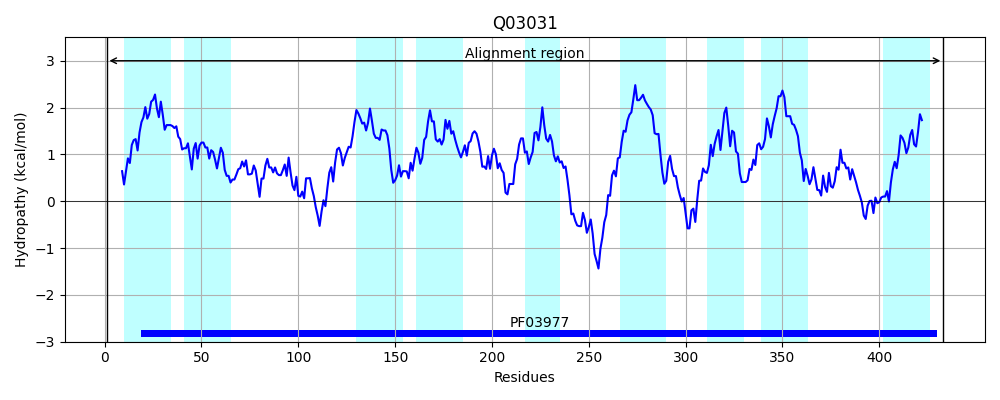
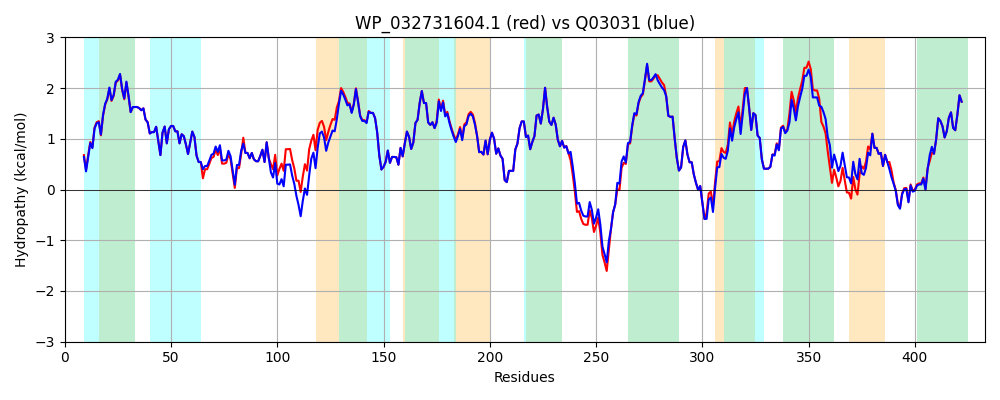

Hit Accession: Q03031
Hit TCID: 3.B.1.1.1
Hit Description: gnl|BL_ORD_ID|12101 gnl|TC-DB|Q03031|3.B.1.1.1 OXALOACETATE DECARBOXYLASE BETA CHAIN (EC 4.1.1.3) - Salmonella typhimurium.
Mach Len: 433
e:0.000000
Query TMS Count : 10
Hit TMS Count: 9
TMS-Overlap Score: 8.000000
Predicted Substrates:CHEBI:9175;sodium(1+)
BLAST Alignment:
Score: 2009 , Bit scores: 778 bits, E-value: 0.0e+00, Alignment length: 433, Percentage identity: 94
Query: 1 MESLNALIQGMGLMHLGAGQAVMLLVSLLLLWLAIAKKFEPLLLLPIGFGGLLSNIPEAGLALTALESLLAHHDPAQLAVIAAKLHCAPDVHAIKEALALALPSVQGQMESLAVDMGYSAGVLAIFYKVAIGSGIAPLVIFMGVGAMTDFGPLLANPRTLLLGAAAQFGIFATVLGALTLNYFGIISFTLPQAAAIGIIGGADGPTAIYLSGKLAPELLGAIAVAAYSYMALVPLIQPPIMKALTTDKERKIRMVQLRTVSKREKILFPAVLLLLVALLLPDAAPLLGMFCFGNLMRESGVVERLSDTVQNALINIVTIFLGLSVGAKLVADKFLQPQTLGILVLGVIAFCVGTAAGVLMAKLLNRFSKNPINPLIGSAGVSAVPMAARVSNKVGLEADGQNFLLMHAMGPNVAGVIGSAIAAGVMLKYVLAM 433
MESLNAL+QGMGLMHLGAGQA+MLLVSLLLLWLAIAKKFEPLLLLPIGFGGLLSNIPEAGLALTALESLLAHHD QLAVIAAKLHCAPDVHAIKEALALALPSVQ QME+LAVDMGY+ GVLA+FYKVAIGSG+APLVIFMGVGAMTDFGPLLANPRTLLLGAAAQFGIFATVLGALTLNYFG+ISFTLPQAAAIGIIGGADGPTAIYLSGKLAPELLGAIAVAAYSYMALVPLIQPPIMKALT++ ERKIRMVQLRTVSKREKILFP VLL+LVALLLPDAAPLLGMFCFGNLMRESGVVERLSDTVQN LINIVTIFLGLSVGAKLVADKFLQPQTLGIL+LGVIAF +GTAAGVLMAKLLN SKN INPLIGSAGVSAVPMAARVSNKVGLE+D QNFLLMHAMGPNVAGVIGSAIAAGVMLKYVLAM
Sbjct: 1 MESLNALLQGMGLMHLGAGQAIMLLVSLLLLWLAIAKKFEPLLLLPIGFGGLLSNIPEAGLALTALESLLAHHDAGQLAVIAAKLHCAPDVHAIKEALALALPSVQNQMENLAVDMGYTPGVLALFYKVAIGSGVAPLVIFMGVGAMTDFGPLLANPRTLLLGAAAQFGIFATVLGALTLNYFGLISFTLPQAAAIGIIGGADGPTAIYLSGKLAPELLGAIAVAAYSYMALVPLIQPPIMKALTSETERKIRMVQLRTVSKREKILFPVVLLMLVALLLPDAAPLLGMFCFGNLMRESGVVERLSDTVQNGLINIVTIFLGLSVGAKLVADKFLQPQTLGILLLGVIAFGIGTAAGVLMAKLLNLCSKNKINPLIGSAGVSAVPMAARVSNKVGLESDAQNFLLMHAMGPNVAGVIGSAIAAGVMLKYVLAM 433 | Protein Hydropathy Plots: |
|---|
|  |  |
Pairwise Alignment-Hydropathy Plot:
|
|---|
|  |